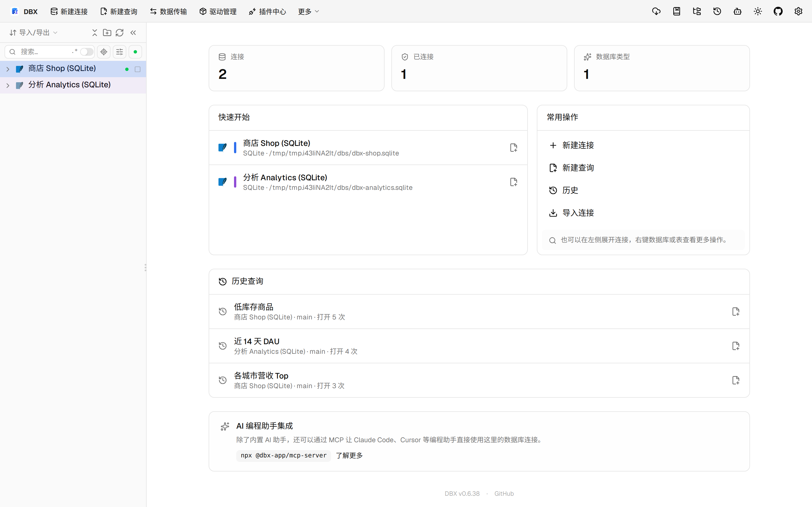
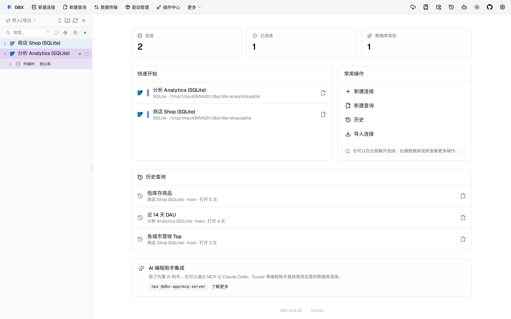
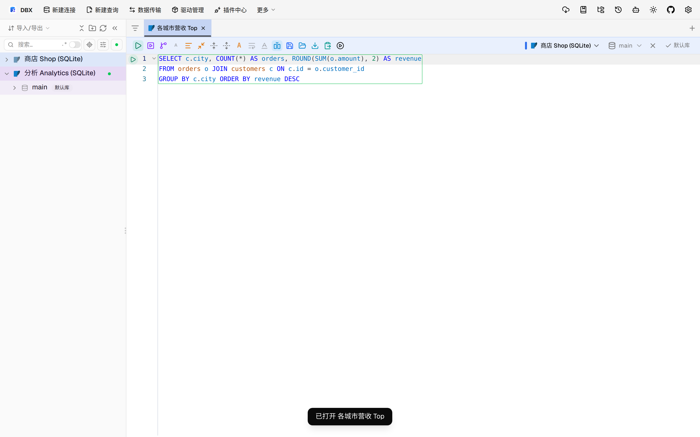

#11568 界面预览
commit 4f120d1 · 回到 PR · 本 PR 为 Oracle / OceanBase Oracle 的触发器新增了完整定义编辑入口，支持在结构化字段与完整源码之间切换、预览完整 DDL、保存后保留恢复材料，并在表结构页/对象浏览中把触发器按真实所有者显示出来。另在 OceanBase Oracle 的对象列表中加入了分页加载与分页搜索提示，且禁用了不适用的正则搜索与部分排序操作。
⚠️ 这次录制有 12 步没能按计划执行；带 ⚠️ 的截图拍摄于步骤失败之后，画面未必是说明文字所描述的状态。
红线是鼠标走过的轨迹，红色圆环是一次点击；底部文字是这一步在做什么。多个场景各自从应用初始状态开始。空格暂停，← → 逐段查看。
 ⚠️ Oracle 触发器完整定义编辑 · customers 表结构页，查看触发器列表
⚠️ Oracle 触发器完整定义编辑 · customers 表结构页，查看触发器列表
 ⚠️ Oracle 触发器完整定义编辑 · 完整触发器定义编辑对话框，查看结构化字段、完整源码与恢复入口
⚠️ Oracle 触发器完整定义编辑 · 完整触发器定义编辑对话框，查看结构化字段、完整源码与恢复入口

⚠️ Oracle 触发器完整定义编辑 · 完整 DDL 预览，查看保存前的触发器替换语句

⚠️ OceanBase Oracle 对象分页 · 事件表数据网格，展示大表场景

⚠️ OceanBase Oracle 对象分页 · 对象浏览区域，展示分页加载相关控件和提示位置